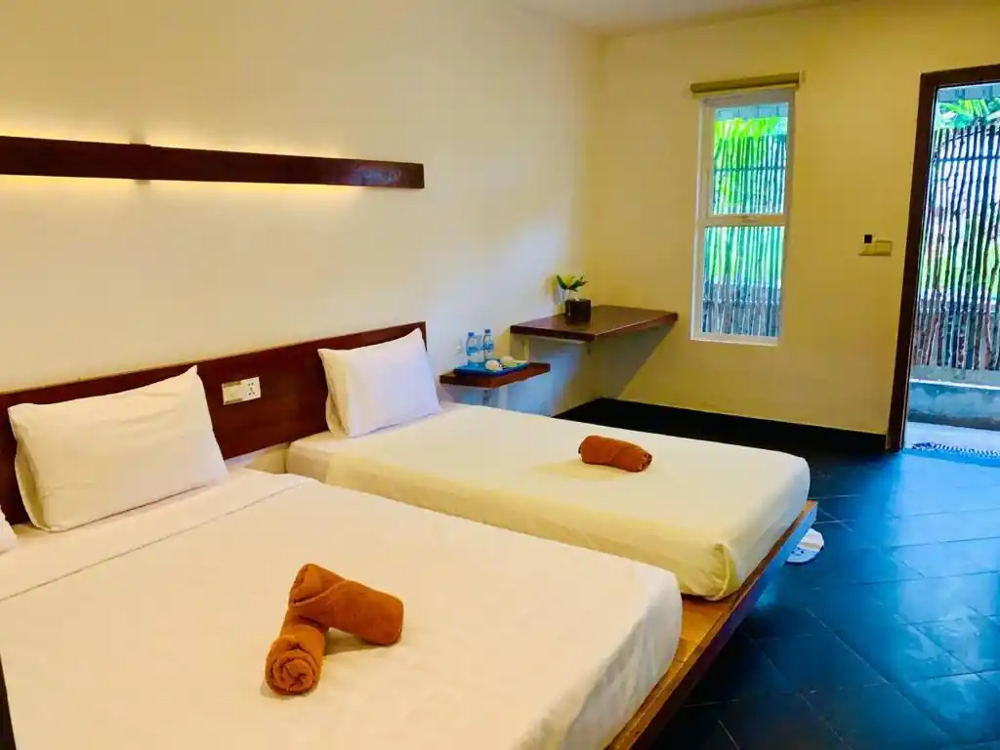
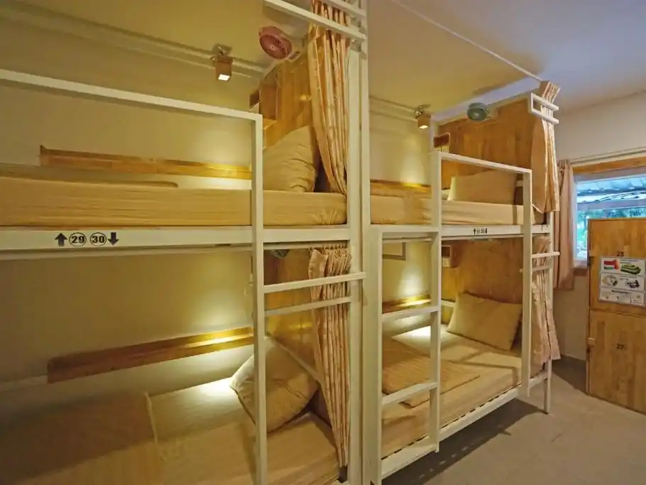
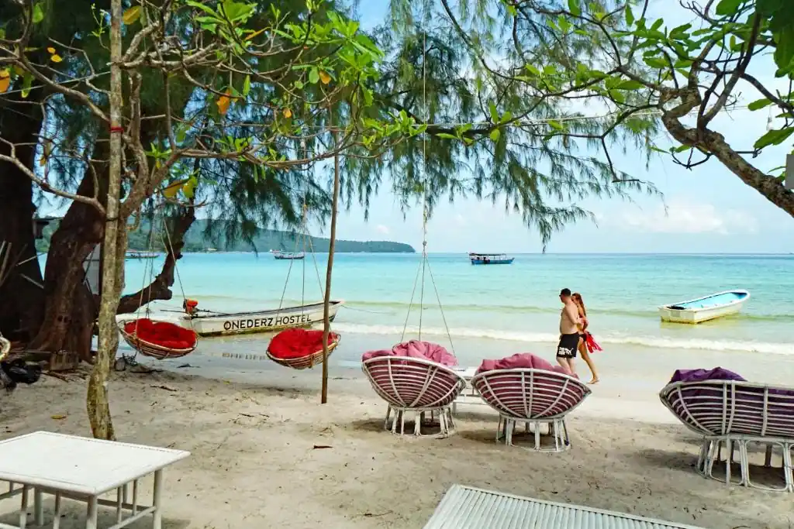
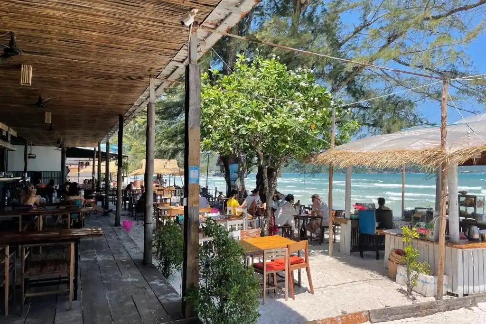
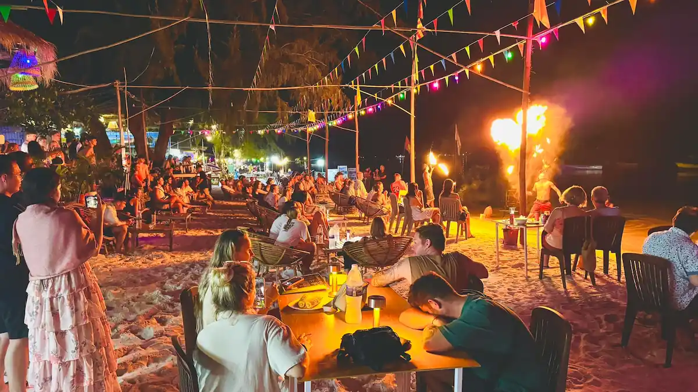
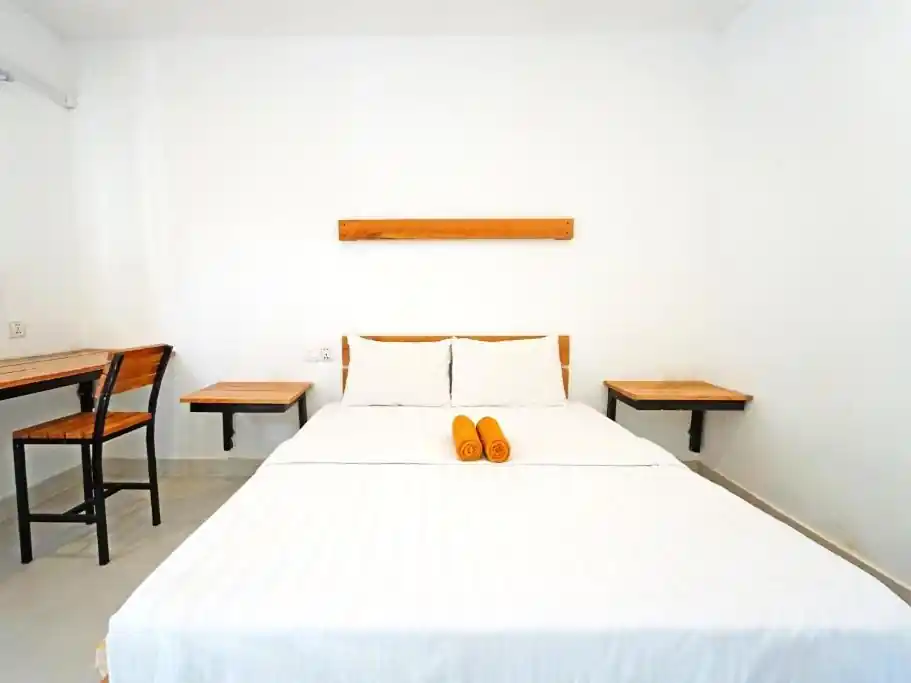
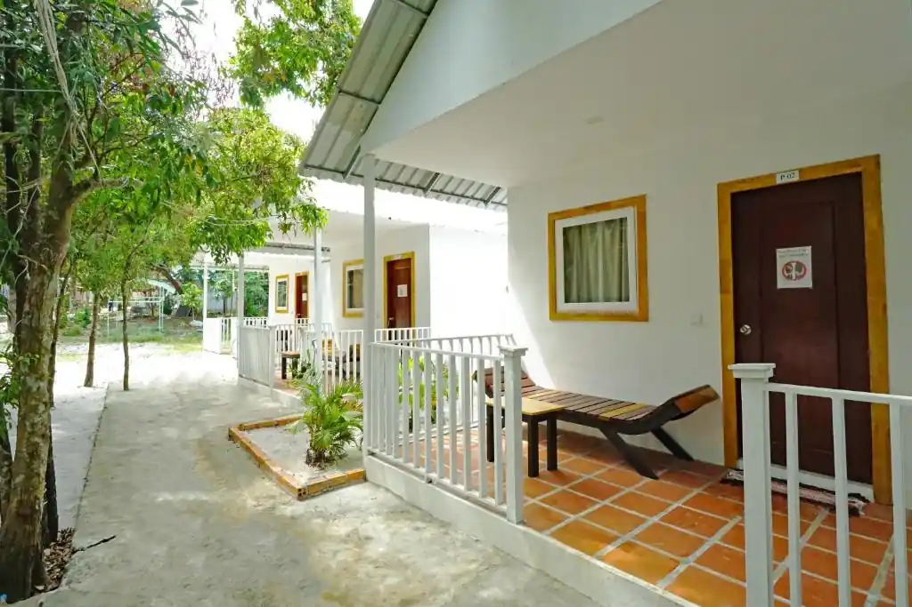

Onederz Koh Rong Samloem offers comfortable dorms and private rooms, along with lively common areas. We are an ideal beachfront base on Saracen Bay, where guests can swim directly in the clear sea, explore Koh Rong Samloem's tranquil beaches, vibrant marine life, and enjoy a more relaxed island atmosphere.
Comfort & Connection
Your Space
Comfy Dorms
Private Rooms
Hostel Perks
Direct Beach Access
Common Areas
Bar & Restaurant
Complimentary Wi-Fi
Guest Services
24/7 Reception
Boat Trips & Transport


Sleep & Relax
Choose from our comfortable mixed or female-only dorms featuring privacy curtains, individual power sockets, and reading lights, all with air-conditioning and secure lockers. We also offer private rooms with en-suite bathrooms, air-conditioning, and complimentary toiletries. All options include free high-speed Wi-Fi.
Discover more


Eat & Drink
Our on-site restaurant and bar offer convenient and delicious dining experiences. Enjoy your meals and drinks just steps from the beautiful Saracen Bay, with the sea right in front of you.
Discover more

Island Adventures Await!
Beyond our doors, discover the pristine beaches, crystal-clear waters, and exciting activities of Koh Rong Samloem. From tranquil snorkeling spots and peaceful jungle treks to breathtaking sunsets, there's always something incredible to experience on this serene island!
Discover more
Our Location
Onederz Koh Rong Samloem is conveniently located on Saracen Bay, Koh Rong Samloem, just a short walk from the main pier, offering direct beach access and easy arrival.
Getting to Onederz Koh Rong Samloem: Your Island Journey
Onederz Koh Rong Samloem is located directly on Saracen Bay, making it easy to reach from Saracen Bay Pier. Here's how to find us:
I. Arriving by Ferry to Saracen Bay Pier›
Most ferries from Sihanoukville now offer direct routes to Saracen Bay Pier on Koh Rong Samloem.
From Saracen Bay Pier:
Distance: Onederz Koh Rong Samloem is just a short walk (approximately 100-200 meters) from Saracen Bay Pier.
How to Get Here:
Simply disembark the ferry and walk along Saracen Bay. We are very close by on the main beach.
There are no tuk-tuks or taxis on Koh Rong Samloem. The island is best explored on foot or by boat taxi.
II. From Other Beaches or Bays on Koh Rong Samloem›
If you're arriving from another beach or bay on Koh Rong Samloem (e.g., M'Pai Bay or Lazy Beach), you'll typically need to take a boat taxi to Saracen Bay Pier.
From Other Locations:
Boat Taxi: Arrange a boat taxi from your current location to Saracen Bay Pier. Prices will vary depending on distance.
Once you arrive at Saracen Bay Pier, follow the directions above.
General Tips for your arrival:
No ATMs on Koh Rong Samloem: While some places accept card payments, it's highly recommended to bring sufficient cash (USD is widely accepted) with you from Sihanoukville.
Power: Electricity can sometimes be limited or operate on a schedule on certain parts of the island. Our hostel generally has consistent power.
Onederz Contact: If you encounter any issues or need directions upon arrival, please don't hesitate to call us directly.
We look forward to welcoming you to Onederz Koh Rong Samloem, your perfect island escape!
The best rate guaranteed!! Book directly with us and get the best price now!
Comfort & Connection
×
Your Space
Comfy Dorms
Private Rooms
Hostel Perks
Direct Beach Access
Common Areas
Bar & Restaurant
Complimentary Wi-Fi
Guest Services
24/7 Reception
Boat Trips & Transport
Dorms & Private Rooms
Whether you're looking to mingle and save, or prefer a tranquil retreat, our accommodations are designed to meet your needs. Our dorm rooms foster a vibrant community feel with cozy, private bunk spaces, while our private rooms offer a personal sanctuary complete with en-suite amenities. Both options prioritize your comfort with quality furnishings and essential features for a memorable stay.
4-Bed Dormitory Room
(Available as Mixed Only)
Perfect for: Budget travelers and small groups who enjoy a communal atmosphere.
Our intimate 4-bed mixed dorms offer a cozy communal space. Each bunk features privacy curtains, personal lights, and secure lockers. Shared bathrooms are conveniently located nearby.
Max People: 4 | Shared Bathroom | Free Wifi
6-Bed Dormitory Room
(Available as Mixed Only)
Perfect for: Socializing and meeting new people in a slightly larger setting.
Our 6-bed mixed dorms provide a balanced communal environment. Each bunk includes privacy curtains, personal lights, and lockers. Shared bathrooms are easily accessible.
Max People: 6 | Shared Bathroom | Free Wifi
8-Bed Dormitory Room
(Available as Mixed or Female Only)
Perfect for: Socializing and connecting with more travelers.
Our spacious 8-bed dorms offer a vibrant atmosphere for meeting fellow travelers. Each bunk includes privacy curtains, personal lights, and lockers. Shared bathrooms are conveniently located nearby.
Max People: 8 | Shared Bathroom | Free Wifi


Double Room with Terrace
Perfect for: Couples or solo travelers seeking privacy with outdoor space.
A comfortable private room featuring a cozy double bed, an en-suite bathroom, and a private terrace where you can relax and enjoy the island breeze.
Perfect for: Friends traveling together seeking comfort and outdoor space.
This private room features two comfortable single beds, an en-suite bathroom, and a private terrace, providing a pleasant space to unwind after your adventures.
Perfect for: Couples or solo travelers prioritizing privacy and convenience.
A comfortable private room featuring a cozy double bed and an en-suite bathroom, offering a peaceful retreat after exploring the island.
Max People: 2 | Private Bathroom | Free Wifi
Triple Room with Private Bathroom
Perfect for: Small groups or families looking for a private shared space.
A spacious private room designed to comfortably accommodate three guests, typically with three single beds or a combination of beds, and an en-suite bathroom.
Max People: 3 | Private Bathroom | Free Wifi
Dorms: Connect & Unwind
We believe a great stay balances privacy with community! Our dorm rooms offer both, with bunk beds designed like cozy boxes that give you your own private space. Inside, you'll find everything you need: an electric socket, a reading lamp, and an accessory case. Even though we're a budget-friendly accommodation, we don't compromise on comfort; our mattresses, blankets, and pillows are as good as those in a hotel. Plus, all our rooms come with well-maintained air-conditioners and exhaust fans to keep you comfortable.
To ensure your peaceful sleep isn't disturbed, we've placed our shared bathrooms conveniently outside the dorm rooms. This means you can get all the rest you need to wake up refreshed and ready to connect with fellow travelers.
Keep your belongings safe and sound in our large lockers, measuring 40cm x 50cm x 80cm. We even provide padlocks if you don't have your own. So, you'll get two keys when you check in: one for your room door and another for your personal locker. We look forward to welcoming you and helping you make the most of your trip!
Private Room: Your Social Base
Discover the perfect balance of personal space and social opportunity in our private rooms. Each room is thoughtfully designed to be your comfortable base, featuring a refreshing air conditioner and peace of mind with your own electronic digital security box. We've included an electric kettle to kickstart your mornings, and bottles of water to keep you hydrated. Stay connected with loved ones or plan your next outing using our free Wifi, and enjoy the luxury of fresh towels and more.
Forget shared facilities! You'll love the convenience of your private bathroom right inside the room. With a clever partition wall and curtain separating the shower booth and toilet, you'll have all the space and privacy needed to get ready for a bustling day of sightseeing or to relax after a fun social evening.
Eatery
Restaurant & Bar
Our on-site restaurant and bar offer convenient and delicious dining experiences. Enjoy your meals and drinks just steps from the beautiful Saracen Bay, with the sea right in front of you.
Open everyday
From 7:00 AM - 12:00 AM (midnight)
We're delighted to offer convenient and delicious dining experiences right on the beachfront.
Opening Hours & Service
Our kitchens are open every day from 7:00 AM for all-day dining. You can enjoy our full menu, including breakfast, lunch, and dinner, throughout the day. The last food order is at 11:00 PM, and the dining area closes at 12:00 AM (midnight).
Your Dining Choices
You'll find a diverse menu to satisfy every craving. We offer a delicious selection of Asian and Western dishes, complemented by refreshing fresh shakes and juices, as well as a wide range of soft drinks, cocktails, beer, and wine. We look forward to serving you!
Explore Koh Rong Samloem
Discover What Koh Rong Samloem Offers!
Koh Rong Samloem is a serene island paradise with an abundance of activities and stunning natural beauty. Here's a guide to help you explore during your stay!
Beach Hopping & Relaxation
Koh Rong Samloem boasts numerous pristine beaches beyond Saracen Bay. Rent a boat or hike to discover hidden coves and tranquil shores.
Saracen Bay: Our beautiful home beach, perfect for swimming, relaxation, and stunning sunrises.
Lazy Beach: A serene and picturesque beach on the west side, known for its tranquil vibe and sunsets, accessible by walking trail or boat taxi.
M'Pai Bay: A charming fishing village and backpacker hub on the northern tip, accessible by boat taxi.
Water Activities & Marine Life
The crystal-clear waters surrounding Koh Rong Samloem are perfect for a variety of aquatic adventures.
Snorkeling & Diving: Explore vibrant coral reefs and diverse marine life. Equipment rentals and tours are widely available from Saracen Bay.
Bioluminescent Plankton Tours: Experience the magical glowing plankton after sunset – a must-do! Tours often depart directly from Saracen Bay.
Kayaking & Paddleboarding: Rent equipment to explore the coastline of Saracen Bay at your own pace.
Jungle Treks & Adventures
For the adventurous, Koh Rong Samloem's interior offers lush jungle trails and exciting attractions.
Jungle Trekking: Discover trails leading to viewpoints, hidden beaches like Lazy Beach, or the old lighthouse.
Lighthouse Trail: Hike to the old lighthouse for panoramic views of the island and surrounding sea (can be challenging).
Island Nightlife & Dining
Saracen Bay offers a relaxed and friendly atmosphere with beachfront dining and cozy bars.
Beachfront Dining (Saracen Bay): Enjoy fresh seafood BBQs and international cuisine right on the sand with stunning views.
Beach Bars: Discover a selection of relaxed bars along Saracen Bay for evening drinks and socializing.
M'Pai Bay Evening: For a slightly different vibe, a short boat taxi can take you to M'Pai Bay which has a few relaxed bars and restaurants.
Getting Around the Island
The main way to get between bays on Koh Rong Samloem is by boat taxi, easily arranged at Saracen Bay Pier or through our reception. For shorter distances within Saracen Bay, walking is the primary mode of transport.
Local Tip: For information on boat taxis to other beaches, snorkeling trips, or any island activities, please ask our friendly reception team. They are happy to provide local insights and help you make the most of your Koh Rong Samloem adventure!
Onederz Koh Rong Samloem is conveniently located on Saracen Bay, Koh Rong Samloem, just a short walk from the main pier, offering direct beach access and easy arrival.
Good to know
×
Getting to Onederz Koh Rong Samloem: Your Island Journey
Onederz Koh Rong Samloem is located directly on Saracen Bay, making it easy to reach from Saracen Bay Pier. Here's how to find us:
I. Arriving by Ferry to Saracen Bay Pier›
Most ferries from Sihanoukville now offer direct routes to Saracen Bay Pier on Koh Rong Samloem.
From Saracen Bay Pier:
Distance: Onederz Koh Rong Samloem is just a short walk (approximately 100-200 meters) from Saracen Bay Pier.
How to Get Here:
Simply disembark the ferry and walk along Saracen Bay. We are very close by on the main beach.
There are no tuk-tuks or taxis on Koh Rong Samloem. The island is best explored on foot or by boat taxi.
II. From Other Beaches or Bays on Koh Rong Samloem›
If you're arriving from another beach or bay on Koh Rong Samloem (e.g., M'Pai Bay or Lazy Beach), you'll typically need to take a boat taxi to Saracen Bay Pier.
From Other Locations:
Boat Taxi: Arrange a boat taxi from your current location to Saracen Bay Pier. Prices will vary depending on distance.
Once you arrive at Saracen Bay Pier, follow the directions above.
General Tips for your arrival:
No ATMs on Koh Rong Samloem: While some places accept card payments, it's highly recommended to bring sufficient cash (USD is widely accepted) with you from Sihanoukville.
Power: Electricity can sometimes be limited or operate on a schedule on certain parts of the island. Our hostel generally has consistent power.
Onederz Contact: If you encounter any issues or need directions upon arrival, please don't hesitate to call us directly.
We look forward to welcoming you to Onederz Koh Rong Samloem, your perfect island escape!

 Comfy Dorms
Comfy Dorms Private Rooms
Private Rooms Direct Beach Access
Direct Beach Access Common Areas
Common Areas Bar & Restaurant
Bar & Restaurant 24/7 Reception
24/7 Reception